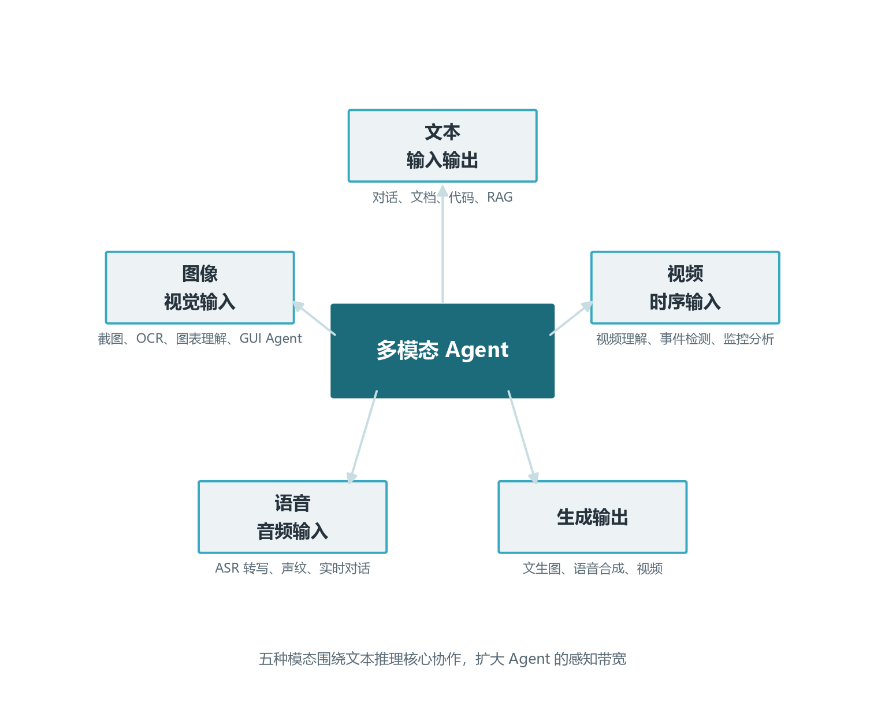
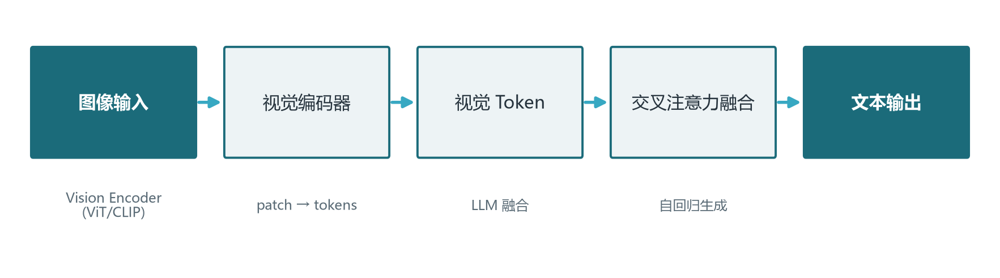
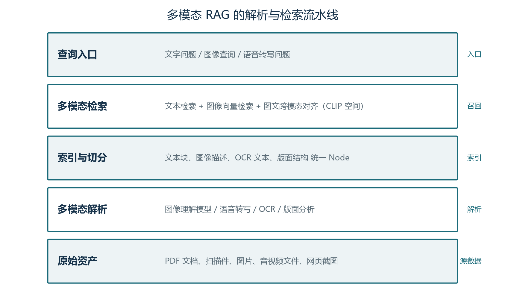

前言：为什么 Agent 需要眼睛、耳朵与嘴巴
翻开本手册前十六卷，你会注意到一个隐含假设：Agent 的输入与输出几乎都是文本。对话消息、RAG 文档、工具返回、代码——全部以文字形式流过上下文窗口。这对许多任务足够用，但真实世界的知识并不只是文字：产品手册里是标注了尺寸的图纸，客服对话里有用户发来的截图，会议记录里有语音与 PPT 页面，运维告警里带着监控面板截图。把 Agent 局限在文本世界，等于让一个员工蒙上眼睛、塞住耳朵去工作——它只能通过别人转述的文字理解世界。
卷17 的目标是拆掉这层限制。你将理解多模态模型的内部机制（视觉 Token 如何进入语言模型、语音如何流式转写）、掌握多模态输入的工程管线（图像预处理、OCR、音视频切片）、学会把图像与语音纳入检索与记忆（多模态 RAG 与跨模态检索），并了解多模态输出的编排方式（文生图、语音合成在 Agent 里的位置）。学完后，你能回答这些实际问题：用户发来一张报错截图，Agent 如何理解并行动？电话客服场景如何用 ASR+TTS 包出一个完整语音 Agent？GUI 操作 Agent（Computer Use）如何"看见"屏幕？
学完本卷，你将能够：
- 说清 VLM 的基本架构（视觉编码器 + 投影层 + LLM）与三种主流实现路线；
- 搭建一条"图像进、理解出"的视觉输入管线（截图/OCR/文档图像）；
- 用 ASR + LLM + TTS 串联出一个流式语音对话 Agent；
- 把图像、音频纳入 RAG 与记忆，实现"图文混合检索"；
- 判断哪些场景值得做多模态、哪些场景保持纯文本更划算。
本卷假设你已完成卷02（Transformer）、卷08（RAG）、卷10（工具调用）的学习。多模态模型与文本模型共享底层架构，卷02 的注意力机制与 KV Cache 知识在这里直接复用；多模态 RAG 是卷08 思想的自然延伸。
第一章 多模态 Agent 全景：为什么要扩展感知带宽
1.1 从单模态到多模态：Agent 的感知革命
人类解决问题时天然使用多种感官：看一张示意图理解结构、听一段语音捕捉语气、读文字获取精确信息。模态（modality）在这里指信息的存在形式——文本、图像、音频、视频、结构化数据。多模态 Agent 的定义随之清晰：能同时处理并关联多种模态信息的 Agent 系统。它的价值不是"多支持几种格式"，而是感知带宽的扩展——模型能从更丰富的信息中做决策。
想象一个售后场景。文本 Agent 收到用户消息"我的打印机坏了，这是报错"，只能让用户再打字描述；多模态 Agent 收到同一消息加一张报错截图，能直接识别屏幕上的错误代码 E-02、检索对应手册段落、判断是卡纸还是墨盒问题、给出分步处理。这就是感知带宽带来的决策质量差异。再比如 GUI Agent（Computer Use）：要操作一个没有 API 的旧系统，Agent 必须先"看见"屏幕上的按钮与表单，才能决定点哪里——这是纯文本 Agent 无法完成的任务类别。
多模态不是"多几个 API 调用"那么简单，它带来三个层面的工程变化。第一是输入解析：图像要转成模型能理解的表示（视觉 Token 或描述文本），语音要转成文本或音频 Token，视频要按时间轴切分。第二是上下文组织：不同模态的信息如何在提示词中排列、如何与检索结果融合、如何控制各自的 Token 预算。第三是输出生成：Agent 如何产出图像、语音等非文本结果，以及这些结果如何流式呈现给用户。本章先建立全景，后几章逐层展开。

1.2 模态输入的三种接入方式
把任意模态喂给 Agent，工程上只有三条路，理解它们能帮你快速判断一个多模态产品是怎么实现的。方式一：转文本（Describe-then-Reason）——用视觉/语音模型把图像"翻译"成文字描述、把语音转成文字稿，然后走标准文本 Agent 管线。优点是实现最简单、复用全部文本基建（RAG、记忆、工具）；缺点是信息有损——图表里的精确数值、图像的空间细节、语音中的语气都可能在转述中丢失。适合描述性理解、内容不敏感的场景。
方式二：原生多模态模型（Native VLM）——直接用能接受图像/音频 Token 的模型（GPT-4o、Qwen2.5-VL、Claude 等），图像不经转述直接进入模型。优点是保留原始信息、支持"指哪看哪"的空间理解（让模型看截图左上角区域）；缺点是 Token 成本高（一张图可能消耗数百到上千视觉 Token）、依赖厂商的多模态能力。适合需要精确视觉判断的场景（读表、看图、定位 UI 元素）。
方式三：混合管线——先转文本用于检索与记忆（图像描述进向量库），关键步骤再用原生 VLM 做精确理解（用户追问细节时看原图）。这是生产系统最常见的架构：检索用文本、理解用原图。它兼顾成本与精度，是多模态 RAG 与多模态客服的工程主流。记住这三条路，阅读本章后续内容就有了坐标系。
1.3 多模态的典型任务分类
把多模态 Agent 的产品形态按"输入模态 × 输出模态 × 任务类型"分类，可以得到一张清晰的网格。按任务类型看，高频的有四类：
- 视觉问答（VQA）：输入图像+问题，输出文本答案。识别物体、读取图表、理解场景。产品形态：文档问答、截图答疑、商品图片咨询。
- 语音对话：输入语音流，输出语音/文本。ASR 把语音转文本进 LLM，TTS 把回复合成语音。产品形态：电话客服、语音助手、会议纪要（多说话人转写）。
- GUI 操作（Computer Use）：输入屏幕截图+用户指令，输出界面操作动作。模型"看见"屏幕状态→决定点击/输入/滚动→观察新屏幕。产品形态：UI 自动化、旧系统操作、个人助理跨应用。
- 多模态创作：输入文本/参考图，输出图像/语音/视频。产品形态：营销物料生成、个性化语音、图文混排报告。
这四类任务在后面的章节各有落点：VQA 是第二章（模型）与第三章（视觉管线）的主线；语音对话是第四章（语音链路）；Computer Use 贯穿第三、五章；创作在第六章（输出编排）。先记住这张分类网格，读到对应章节时可以回看定位。
| 任务类型 | 输入 | 输出 | 代表能力 | 典型产品 |
|---|---|---|---|---|
| 视觉问答 VQA | 图像+文本 | 文本 | 识图、读表、OCR | 文档问答、截图答疑 |
| 语音对话 | 语音流 | 语音/文本 | ASR、LLM、TTS | 电话客服、语音助手 |
| GUI 操作 | 屏幕+指令 | 动作序列 | 视觉定位、点击输入 | UI 自动化、Computer Use |
| 多模态创作 | 文本/参考图 | 图像/语音/视频 | 文生图、语音合成 | 营销物料、报告配图 |
| 视频理解 | 视频+文本 | 文本 | 时序事件识别 | 监控分析、视频检索 |
1.4 多模态的成本账
多模态不是免费的。做任何多模态产品前，先把成本账算清楚，避免"功能做出来了、预算撑不住"的尴尬。图像输入的成本通常按视觉 Token 计费：一张 1024×1024 的图像在主流 VLM 中可能消耗 200-1500 个视觉 Token（取决于切分方式与分辨率），这相当于数百到上千文字 Token 的成本。语音转写（ASR）的成本通常按音频时长计费（每分钟若干元或按模型吞吐），语音合成（TTS）类似。
因此，多模态工程的第一条省钱原则是：能少用原生视觉就不多用。一次完整的视觉 Agent 交互，如果每个环节都把整张图喂给 VLM，成本可能是一张图 × 多轮调用。工程上的解法是"分层理解"：先低成本 OCR/描述模型提取关键信息（文本层），只有需要精确视觉判断时才调用高成本原生 VLM（视觉层）。这正是 1.2 节"方式三：混合管线"的成本逻辑。
第二条原则是缓存多模态中间产物。同一张图的 OCR 结果、视觉描述、向量表示，在用户多次追问时应复用（语义缓存，见卷09 与卷18 成本工程）。对高重复率场景（同一商品图被不同用户问）、批量场景（一批文档同一时间解析），缓存能省下 50% 以上的重复解析成本。卷18 的成本模型在这套逻辑上做预算核算。
第二章 多模态模型：从 VLM 到全模态
2.1 VLM 的三种架构路线
视觉语言模型（VLM）是让 Agent"看见"的核心。2024 到 2025 年间，VLM 架构收敛为三条路线，理解它们的差异能帮你选型与排查问题。
路线一：视觉编码器 + 投影 + LLM（代表：LLaVA、Qwen2.5-VL、InternVL）。视觉编码器（通常是 ViT 或 CLIP 的图像分支）把图像切成 patch 并编码为视觉特征，投影层把视觉特征映射到 LLM 的词嵌入空间，LLM 随后用交叉注意力（或拼接）处理"文本 Token + 视觉 Token"的混合序列。这条路线的优点是：可以复用任意文本 LLM（把开源 LLM 升级成 VLM），视觉编码器可独立升级（换更好的编码器提升视觉理解）。这是当前最主流的架构。
路线二：统一 tokenizer / 全模态模型（代表：GPT-4o、Gemini、Qwen2.5-Omni 系列方向）。模型从一开始就在图像、音频、文本的混合数据上训练，不同模态共享同一个 Transformer 骨干（不一定有独立的视觉编码器，而是把图像 patch 直接 token 化进序列）。优点是模态间交互自然、支持任意混合输入（图像+音频+文字同时问）；缺点是架构封闭、难以自部署、依赖厂商。
路线三：检索增强 / 工具型视觉（把视觉任务外包给专用模型）。LLM 只做调度，OCR 交给 PaddleOCR，识图交给一个专用 VLM，语音交给 Whisper——LLM 充当"多模态工具的路由器"。优点是各专用模型可独立升级、成本可控（只调需要的）；缺点是需要编排、模态间信息融合浅。这条路本质上是 1.2 节"方式三"在模型层面的实现。
选型建议：自部署且需精确视觉选路线一（Qwen2.5-VL 开源效果优秀）；调用云 API 且要任意混合输入选路线二（GPT-4o 等）；已有丰富专用模型、想做编排选路线三。多数企业 Agent 的务实起点是路线一的开源 VLM + 路线三的编排思想。

2.2 视觉 Token 化：图像如何变成模型的"文字"
理解 VLM 的关键是视觉 Token 化——图像如何进入与文本共享的序列空间。以最常见的 ViT 编码器为例：一张图像先被缩放到固定尺寸（如 336×336 或按最长边 1280 等），切成固定大小的 patch（如 14×14 像素一块），每个 patch 经过线性投影变成一个向量，加上位置编码后作为"视觉 Token"输入 Transformer。一张 336×336 图像切成 24×24 个 14×14 patch，产生 576 个视觉 Token——这就是"一张图等于几百字"的成本来源。
高分辨率处理是工程上的关键细节。直接把大图缩到 336×336 会丢失小字与小物体，所以现代 VLM（Qwen2.5-VL、GPT-4o）采用动态分辨率 + 多尺度过采样：把图按最长边切成多个 336 或 448 的瓦片分别编码，再合并——这样能"看清"截图里的小字，但 Token 数随瓦片数线性增长（4 瓦片可能 2000+ Token）。工程启示：需要精确读图（读报表数字、看 UI 文案）时提高分辨率但预算 Token，简单语义理解（判断图片主题）时用低分辨率省钱。
一个常被忽视的点是图像方向与 EXIF：手机照片可能带旋转信息，不做处理会导致 VLM 看到横躺的图像。预处理管线必须统一处理 EXIF 旋转、色彩空间（RGB）、文件压缩。另一个点是视频本质上是"图序列"：把视频按固定帧率抽帧（如每秒 1 帧），每帧作为一张图进入 VLM，配合时间戳让模型理解时序——视频理解成本因此非常高（一分钟视频抽 60 帧即数万 Token），工程上通常只抽关键帧（场景切换检测）。
2.3 主流 VLM 选型
截至 2026 年初，值得 Agent 工程师关注的 VLM 分三个梯队。第一梯队（云 API 旗舰）：GPT-4o/4.1、Claude 系列、Gemini 系列——视觉理解强、支持任意混合输入、生态成熟，适合对精度要求最高且数据可出境的场景。
第二梯队（开源可部署）：Qwen2.5-VL（7B/72B，中文最强开源 VLM 之一，文档解析与 OCR 出色）、InternVL 系列（高分辨率多模态、学术强）、Llama 3.2 Vision（Meta 官方开源）、MiniCPM-V（端侧小模型，能在消费级设备跑）。自部署选型时，Qwen2.5-VL-7B 是文档类任务的首选（OCR + 版面理解优于多数同规模竞品），InternVL 在高分辨率细粒度任务上有优势。
第三梯队（端侧/专用）：Phi-3.5-vision、MiniCPM-V 4 等，面向手机/嵌入式。选型经验法则与卷04 文本模型选型一致：先明确任务类型（读文档/看图/操作界面）、分辨率需求、部署形态、成本预算，再在评估集上实测——不要凭跑分选型。卷15 的评估方法直接适用于多模态：建一个"百图问答集"，对比候选 VLM 的准确率与单次成本。
2.4 语音与音频模型：ASR、TTS 与语音 Token 化
语音 Agent 依赖两类模型。ASR（语音转文字）把音频转成文本：开源首选 Whisper 系列（OpenAI，多语言、鲁棒，large-v3 效果好但慢，distil-whisper 是蒸馏加速版）与 Paraformer（阿里，中文实时性佳）；商业可选各家语音 API。TTS（文字转语音）把文本合成语音：开源有 CosyVoice（阿里，音色克隆强）、ChatTTS、Edge-TTS（免费、效果稳定）；商业有各家 TTS API。语音 Agent 通常不直接"听懂语音"，而是 ASR → 文本 LLM → TTS 的三段式——文本模型是大脑，语音模型只是耳朵与嘴巴。
语音工程有三个关键点。第一是 VAD（人声活动检测）：实时语音流先要判断"人什么时候开始说话、什么时候停"，常见 WebRTC VAD 或 Silero VAD；VAD 的灵敏度直接影响打断体验（太灵敏误切、太迟钝反应慢）。第二是流式 ASR：电话场景要求边说边转，Whisper 的 incremental/streaming 模式或 Paraformer 的流式模式产生"部分转写"，LLM 可以用部分结果做预判，但注意部分转写的误识别率更高。第三是双工对话：全双工（用户和 Agent 同时说、互相打断）需要 VAD + ASR + 对话状态机 + TTS 的精细协作，比半双工（你一句我一句）复杂一个量级。
语音在 Agent 中的另一个角色是作为记忆与检索的模态：会议录音转写后可作为文档进 RAG（卷08），通话摘要可写入长期记忆（卷11），用户的语音偏好可被记录。此外，语音到语音（Speech-to-Speech）模型（如 GPT-4o 的原生语音、Qwen2.5-Omni）跳过了中间的文本表示——情感与语气信息保留更完整，但自部署生态尚不成熟。选型建议：快速落地用"ASR + 文本 LLM + TTS"三段式（组件成熟、可替换）；追求对话自然度与情感保留再评估端到端语音模型。
2.5 多模态模型的局限与幻觉
多模态模型的能力提升很快，但工程上必须对三处局限有清醒认知。第一是"视觉幻觉"：VLM 可能描述图像中不存在的物体——在 2024 年的评测中，即使强模型也有 5-15% 的幻觉率。表现包括：把模糊区域脑补成具体物体、数错图上数量、把"相似但不同"的品牌 logo 认错。视觉幻觉对 Agent 的危害更大：文本幻觉用户还能自己判断，图像幻觉（比如客服 Agent 说"您的商品图显示有划痕"而实际没有）会造成直接误导。
第二是 OCR 的边界：VLM 的 OCR 能力虽强但并非万能——手写体、艺术字体、旋转文字、密集小字仍是错误高发区。工程上读关键信息（单号、金额、条款）应叠加专用 OCR（PaddleOCR、Tesseract 或云 OCR）做二次校验，用"模型判语义 + OCR 核精确"的双通道。第三是时间与空间的弱推理：视频理解中，模型对"事件发生的先后顺序""物体移动轨迹"的推理仍偏弱；图像中"这个按钮在左上角、那个输入框在下方"的空间定位在个别模型上不稳定（Computer Use 需要精确坐标时要用专门的视觉定位模型或 Grounding 模型）。
针对这些局限，生产系统的标准做法是交叉验证 + 分级信任：关键动作（读金额、识别身份、操作界面）用多条证据链交叉验证（OCR + VLM 描述 + 用户确认），非关键理解（判断图片主题、提取大方向）可单模型直出。把多模态模型当作"一个可能出错的感知器"而不是"权威的眼睛"，用工程手段兜底。
2.6 多模态的上下文窗口管理
多模态把卷07 的"上下文预算"问题放大了一个量级。一张图动辄数百到数千视觉 Token，一段 1 分钟视频抽帧后可能上万 Token——如果不做预算管理，一次多轮多模态对话会迅速把上下文窗口撑满，触发卷11 讲的压缩与遗忘，且每轮都重复计入已出现的图像成本。
工程上有四个公认做法。第一，图像只出现一次：多轮对话中用户发过一张图后，后续轮次不要让每轮都重新携带原图——用"图 1 引用"机制（如 assistant 说"关于您刚才发的图 1"）让模型基于对图的记忆或已提取信息继续，而不是重发图像 Token。多数平台 API 允许传 image_url 引用，但推理时仍会重新编码，成本不减；真正的解法是把关键视觉信息在首轮提取为结构化文本（OCR+描述）存入上下文，后续轮只带文本。第二，低分辨率优先、按需升级：默认用低分辨率图（省 Token）判断是否需要细看，需要读小字/细节时再用高分辨率重发一次。第三，视觉摘要入记忆：跨会话场景下，把用户图片的要点摘要写入长期记忆（卷11），新会话不重载原图。第四，视觉 Token 计数纳入成本与预算：把"本会话已消耗视觉 Token"计入卷18 的成本模型与卷12 的循环预算，超过阈值时明确告知用户"图片分析已达上限"。
一个实用的视觉上下文策略是给图像分级：A 级（必须原图，如合同签字页、票据关键字段）、B 级（描述+必要时原图，如产品瑕疵照片）、C 级（仅描述，如随手拍的环境图）。分级信息存在节点元数据里（衔接卷08 索引与卷11 记忆），检索与组装上下文时按级决定是否携带原图。这套分级思想贯穿本卷：多模态系统的每一次"看"，都要问一句"值得花这么多 Token 吗"。
第三章 视觉输入管线：让 Agent 稳定地"看见"
3.1 图像接入的完整链路
无论 Agent 用什么 VLM，图像要进入系统都要走一条工程链路：接收与校验 → 预处理 → 理解 → 归档。前两步的质量决定了后两步的效果——很多"模型看不懂图"的案例，根因其实是图像在预处理阶段就被破坏了。
第一步接收与校验：用户可能上传任意格式（PNG/JPG/WebP/HEIC/GIF）、任意大小（手机照片可能 12MB）、任意方向。服务端要统一：限制格式与大小（超出压缩或拒绝）、读取 EXIF 旋转并修正、检测损坏文件。第二步预处理：统一色彩空间为 RGB、统一最长边（如 1280-2048px 封顶）、按需做压缩（WebP 质量 85 可省 60% 体积而视觉无损）、必要时做增强（低光照、模糊检测并提示重拍）。第三步理解：走 1.2 节的三条路之一（转文本/原生 VLM/混合）。第四步归档：原始图 + 派生产物（OCR 文本、描述、向量）分层存储，供后续检索、审计、重解析使用。
# 图像接入管线的核心骨架（FastAPI 风格）
from fastapi import FastAPI, UploadFile
from PIL import Image, ImageOps
import io, hashlib
app = FastAPI()
MAX_SIDE = 2048 # 最长边上限
async def receive_image(file: UploadFile):
data = await file.read()
img = Image.open(io.BytesIO(data))
img = ImageOps.exif_transpose(img) # 修正 EXIF 旋转
img = img.convert("RGB")
# 限制最长边，避免超大图拖垮后续处理
w, h = img.size
if max(w, h) > MAX_SIDE:
scale = MAX_SIDE / max(w, h)
img = img.resize((int(w * scale), int(h * scale)))
# 稳定哈希：同一张图重复上传时命中缓存
sha = hashlib.sha256(data).hexdigest()
buf = io.BytesIO(); img.save(buf, format="WEBP", quality=88)
return {"sha": sha, "bytes": buf.getvalue(), "size": img.size}
@app.post("/vision/analyze")
async def analyze(file: UploadFile):
img = await receive_image(file)
# 走 OCR 文本层 + VLM 语义层（见 3.2/3.3 节）
return {"image_id": img["sha"], "status": "ok"}工程上还要考虑队列与异步：图像解析是耗时操作（OCR 数百毫秒、VLM 数秒），长任务场景应放入任务队列（卷12 的循环控制与卷14 的事件驱动）而不是阻塞同步接口。用户上传图片后的典型交互是：立即回"图片已收到，正在分析…"，异步完成后推送结果——这与卷14 讲的事件流式交互一致。
3.2 OCR：文本层的第一道解析
OCR（光学字符识别）是视觉管线里最基础也最高频的能力。它把图像里的文字提取成可检索、可进 RAG 的文本。选型上分三类：开源通用（PaddleOCR 中文场景领先、Tesseract 通用但中文一般）、云 OCR（各家云厂商，识别率高、支持表格/票据/身份证等专用场景）、VLM 内置 OCR（Qwen2.5-VL 等的 OCR 能力已相当强，但不适合作为唯一通道）。
OCR 工程有几个关键决策。一是版面分析（Layout）：真实文档是图文混排的（表格、标题、页眉页脚、多栏），纯 OCR 只会吐出一堆文字流。现代方案是先做版面检测（把页面切成标题/段落/表格/图片区域），再逐区域 OCR，最后按阅读顺序重组——PaddleOCR 的 PP-Structure 与云厂商的文档理解 API 都内置了这条链路。二是表格识别：表格是 OCR 的重灾区，需要专门的表格结构还原（把单元格坐标+内容重建为结构化数据），对进 RAG 特别重要（卷08 讲过表格切分的坑）。
三是校验与纠错：OCR 对关键字段（订单号、金额、日期）的错误率即使只有 1-2%，累积起来也不可接受。工程做法是"关键字段二次校验"：数字用规则校验（如金额格式、单号位数）、与上下文交叉验证（OCR 出的日期是否与用户描述一致）、高风险字段提交人工复核（衔接卷11 HITL）。四是多语言：中文 Agent 要处理中英混排，选型时确认 OCR 的中英文混排能力（PaddleOCR 对中英混排支持较好）。
3.3 图像理解的两层调用
生产级视觉 Agent 通常把图像理解拆成"廉价层 + 昂贵层"两层，控制成本同时保证精度。廉价层（高频调用）用低成本模型做粗理解：图像分类（这是合同还是发票？）、主题描述（一句话说清图里有什么）、是否含文字/表格/人脸等属性判断。这些任务 7B 级开源 VLM 就能胜任，单次成本低。昂贵层（按需调用）用旗舰模型做精理解：读报表里的数字、判断产品瑕疵、回答用户对图像细节的追问。
一个设计良好的视觉问答 Agent 会这样分层：用户发图 + 问题"这张发票总金额是多少？"→ 廉价层先判断"这是发票，含金额字段"→ OCR 层提取数字 → 昂贵层（若 OCR 结果与用户描述冲突，或需要解释计算过程）再精确看图。每层都有一个明确的"是否继续"判断，避免每一问都烧旗舰模型的视觉 Token。这个分层思想与卷07 上下文预算、卷18 成本路由一脉相承——多模态只是放大了成本差异，让分层更值得做。
分层之外，还有一个工程细节常被忽略：给模型"该看哪里"的指引。整图直出 VLM 时，模型靠注意力自行找关键区域；但对大图（如 5 页合同扫描拼成的长图），应该先让廉价层"框出"关键区域（crop），再让昂贵层只看裁剪后的局部——既省 Token 又提升精度。现代 VLM 支持 Region-level 输入（用坐标框标注关注区域），编排层应把这种能力暴露给提示词模板。
3.4 GUI Agent：让 Agent 学会"看屏幕、点按钮"
Computer Use / GUI Agent 是多模态视觉最有想象力的应用：Agent 不再通过 API 操作软件，而是像人一样看屏幕、移动鼠标、点击、打字。2024 年底 Anthropic 发布 Claude Computer Use，2025 年 OpenAI 跟进 Computer-Using Agent，开源社区也有 UI-TARS、OmniParser 等项目。这类 Agent 的本质是"视觉闭环"：截图（感知）→ 模型决定动作（决策）→ 执行点击/输入（行动）→ 再截图观察结果（反馈）。
GUI Agent 的工程挑战集中在三处。一是元素定位的精度：模型要给出"点哪个坐标"或"操作哪个可访问性元素"的指令。截图分辨率与真实屏幕的映射、多显示器、缩放比例（DPI）都会引入偏移。生产方案是"可访问性树 + 视觉双通道"：优先用系统可访问性 API 拿到按钮/输入框的语义树（精确、可靠），屏幕截图作为补充（处理无法访问的旧系统）——两条通道互相印证，比纯视觉点击可靠得多。
二是动作空间的收敛：与其让模型自由地"移动鼠标到任意坐标"，不如定义受限的动作集合（点击元素 X、在输入框 Y 输入文本、按回车、滚动）并让模型在集合内选择，用约束（卷05 的 guided decoding）保证动作格式合法。三是状态确认与回滚：GUI 操作是不可逆的（点了删除就删了），必须在动作前后对比屏幕状态、对高风险动作（删除、提交、付款）要求人工确认（衔接 HITL）。真实产品通常只让 GUI Agent 处理"浏览、查询、填写"类低风险操作，把"提交、删除、转账"留给人工。
一个 GUI Agent 的最小感知循环示意：
# GUI Agent 视觉-行动闭环骨架
import pyautogui, time
from openai import OpenAI
client = OpenAI() # 视觉模型
def get_screen():
img = pyautogui.screenshot()
img.save("/tmp/screen.png")
return "/tmp/screen.png"
def decide_action(screen, task, history):
# 把截图作为图像输入，要求模型输出结构化动作
resp = client.chat.completions.create(
model="gpt-4o", # 或自部署 Qwen2.5-VL
messages=[{
"role": "user",
"content": [
{"type": "image_url", "image_url": {"url": f"file://{screen}"}},
{"type": "text", "text": f"任务：{task}\n请从动作集中选择下一步："
"click(x,y), type(text), press(key), scroll(dir). 输出 JSON。"},
],
}],
response_format={"type": "json_object"},
)
return json.loads(resp.choices[0].message.content)
def run_gui_task(task, max_steps=15):
history = []
for step in range(max_steps):
screen = get_screen()
action = decide_action(screen, task, history)
if action.get("done"):
return "任务完成"
# 执行动作（低风险白名单内）
if action["type"] == "click":
pyautogui.click(action["x"], action["y"])
elif action["type"] == "type":
pyautogui.typewrite(action["text"])
elif action["type"] == "press":
pyautogui.press(action["key"])
time.sleep(1.5) # 等待界面响应
history.append(action) # 记录动作便于回溯
return "达到步数上限"这个骨架展示了 GUI Agent 的五个工程要素：截图感知、动作决策、受限执行、状态等待、步数上限。真实产品还要加：动作前后的截图 diff（确认界面真的变了）、失败重试与降级（模型给出非法动作时怎么办）、高风险动作的人工审批、以及卷15 的可观测性（完整记录"看到什么→做了什么→结果如何"供回放）。
第四章 语音链路：让 Agent 能听会说
4.1 语音 Agent 的三种形态
语音 Agent 的工程形态按"实时性"与"交互深度"分三种。形态一：语音问答（Voice Q&A）——用户说一句话，Agent 回答一句话。架构最简单：录音 → ASR 转文字 → LLM 生成回答 → TTS 播放。适合信息查询类（问天气、查订单状态），延迟要求宽松（可接受 2-3 秒）。形态二：多轮语音对话（Voice Chat）——像打电话一样连续对话，需要 VAD 控制说话时机、流式 ASR、上下文保持。适合客服/助理场景，对打断处理要求高。形态三：实时全双工（Full-duplex）——双方可同时说话、随时打断，需要端到端语音模型或精细的状态机。适合自然对话、会议、陪伴类场景，工程复杂度最高。
绝大多数业务场景从形态一开始，做熟后演进到形态二；形态三只有在"自然度就是产品核心"时才值得投入。选型时不要被"全双工"迷惑——形态二的工程收益远大于形态三的自然度提升，且组件都可独立替换。语音不是多了一种输入，而是改变了交互范式：用户不能"看"进度、不能滚动历史，Agent 必须在更短的时间里给更准确的回应，出错时的体验更差。这意味着语音 Agent 的提示词要更简洁、回答要更短、失败时要更主动地引导。
4.2 ASR 选型与流式转写
ASR 是把语音变文本的第一步，选型看五个维度：识别准确率（中文场景尤其看普通话与方言、中英混说）、实时性（延迟、是否支持流式）、成本（按分钟计费）、部署形态（云端 API vs 自部署）、说话人分离（会议场景需区分谁在说话）。
开源自部署的主流选择：Whisper（OpenAI，large-v3 准确率最高但慢，支持 99 种语言，distil-whisper 是蒸馏加速版，速度快 6 倍体积小一半）；Paraformer（阿里，中文效果出色、流式实时性佳）；FunASR（阿里开源语音工具包，集成 Paraformer/说话人分离/标点恢复）。云端 API 以各家云厂商语音服务为主，识别率在中文场景普遍好于通用开源模型，但数据出域要评估合规。
流式转写是语音 Agent 的关键工程。非流式（一次性上传整段音频）延迟高（要等用户说完）；流式（边说边转）能把首段文字延迟降到 300-800ms。实现要点：音频按帧/块切分（如每 100ms 一段）、VAD 判断语音起止、增量转写（对已转部分不再处理）、用 punctuation 恢复与标点预测提升文本质量（语音转文字通常没有标点，直接进 LLM 会降低理解质量）。
转写质量对下游的影响常被低估。ASR 的错误（同音字、数字、专业名词）会直接污染 LLM 理解。工程对策：领域词表热更新（把产品名、人名、型号加入 ASR 词表，显著降低专名错误）、数字与单位规范化（把"三二五"规范成"325"）、置信度透传（ASR 返回低置信度片段，Agent 对这部分内容持保留态度或主动确认）。一个实用的设计：ASR 转写文本与音频都保留，LLM 不确定时可回听关键片段。
4.3 TTS 与语音输出
TTS 把文本变成语音，选型看：自然度（MOS 分）、音色多样性（是否支持自定义音色/克隆）、延迟（首包延迟与实时率）、多语言、情感表达。开源主力：CosyVoice（阿里，音色克隆与多情感表现出色，实时率可到 0.3 以下即 1 秒音频 0.3 秒合成）、ChatTTS（对话自然度高）、Edge-TTS（免费、网络语音质量稳定，适合快速原型）。商业 API 以各家云厂商 TTS 为主。
语音输出在 Agent 里有三个工程层次。一是合成：把 LLM 的文本回复转语音，注意文本预处理（数字读法、英文缩写、标点停顿——直接合成"API"可能读成单词还是字母，需要 SSML 标记控制）。二是打断：用户说话时 TTS 必须能立即停止，否则体验灾难——实现上 TTS 播放与 VAD 检测并行，VAD 检测到人声即停 TTS（同时把已合成未播放的部分丢弃）。三是流式合成：长回复边生成边合成边播放，避免用户等全部文本生成完才听到声音。流式 TTS 与 LLM 的流式输出（卷14）要协同：LLM 吐一句、TTS 合一句、播放一句。
语音回复还有一个文本没有的问题：长度控制。用户听 300 字回复（约 1 分钟）比读同样内容痛苦得多，语音 Agent 的回复要更短、更结构化（"先说结论再说细节"）。提示词工程在语音场景的规则不同——卷07 的"给足上下文"要让位于"给短答案"；可以让 LLM 先生成"要点版"再 TTS，或直接要求"回复不超过 60 字、适合朗读"。
4.4 端到端语音 Agent 案例：电话客服
把 4.2-4.3 的组件拼起来，一个电话客服语音 Agent 的最小架构如下。用户拨入 → 运营商语音网关 → WebRTC/电话桥接入 → 实时音频流进入服务 → VAD 检测用户说话 → 流式 ASR 转写 → 文本进 LLM（带客服系统提示 + 知识检索）→ LLM 生成回复文本 → TTS 合成 → 音频流送回用户。全程同时维护会话状态（对话历史、用户身份、订单上下文）。
工程上这套系统要处理几个真实难题。回声与噪音：电话链路的回声消除（AEC）与降噪（NS）通常由语音网关或 WebRTC 处理，服务端要保证输入音频干净，否则 ASR 错误率飙升。半双工冲突：Agent 正在说话时用户插话，需要 VAD 检测并决定"停下让用户说"还是"继续说完当前句"——产品策略决定。身份验证：涉及订单/账户查询时必须做声纹或 PIN 验证（或转人工），与卷16 安全衔接。失败降级：ASR 连续失败或 LLM 超时，要平滑转人工或提示用户重说，不能死循环。
一个更省成本的分层：先用意图路由判断这通电话是否需要 LLM。简单请求（查营业时间）走规则脚本，复杂请求才进 LLM——把 60% 的低价值通话用规则处理，能省下大部分语音模型成本（卷18 的成本路由思想在语音场景同样适用）。多模态的工程判断在这里再次体现：不是所有对话都要用最强模型，分层与路由才是成本与体验的平衡点。
第五章 多模态 RAG 与记忆
5.1 多模态知识的检索难题
企业知识库从来不只是文字：产品手册里有图纸与规格表、培训材料里有截图与流程图、会议记录里有 PPT 页面与照片。多模态 RAG 要回答的是"当知识以图像形式存在时，如何被检索到并用于回答"。这个问题的难点在于：文本检索用关键词/语义，图像检索用什么？用户的问题通常以文字发出（"那个流程图里第三步是什么"），而答案藏在一张图里——检索必须在"文字问题"和"图像内容"之间建立桥梁。
卷08 讲过文本 RAG 的五阶段（解析→切分→索引→检索→生成），多模态 RAG 不是推翻这套流程，而是给每个阶段加上"多模态版本"。解析阶段：图像要么转成文字（OCR + 视觉描述），要么保留为图像并生成描述与向量。索引阶段：多模态文档被切分成"文本块 + 图像节点"，图像节点带文字描述元数据。检索阶段：用户问题既匹配文本块，也通过"问题向量 vs 图像描述向量"或"跨模态对齐"命中图像节点。生成阶段：命中的图像节点需要被"展示"给最终模型（如果它支持视觉）或转成描述文本。
5.2 三种图像入索引策略
把图像纳入 RAG 索引，工程上有三种策略，按"保留信息量"从低到高排序。
策略一：图像转文本后索引（最省、最通用）。OCR 文本 + VLM 描述文本作为该图的"文字替身"进入标准文本索引。检索命中的是描述文本，生成时引用描述。优点：完全复用文本 RAG 基建；缺点：检索粒度粗（描述可能遗漏细节）、生成时无法真正"看图"。适用：图像是辅助说明、关键信息已由 OCR/描述覆盖的场景。
策略二：图像 + 描述双节点索引（推荐）。图像本身作为一个节点保存（含原始图、缩略图、OCR 文本、VLM 描述、嵌入向量多个字段），描述参与文本检索；命中后返回的是图像节点——如果下游模型支持视觉，直接看图；否则用描述兜底。优点：保留了"看图"的可能；缺点：索引结构更复杂（多字段、多向量）。
策略三：跨模态向量检索（CLIP 空间）（最强、最贵）。用 CLIP 类模型把图像和文本嵌入到同一向量空间，用户文字问题直接与图像向量比对——不需要图像有文字描述也能命中（"找一张夕阳下大桥的照片"直接匹配图像语义）。优点：支持真正的"以文搜图"；缺点：需要专门的跨模态嵌入模型、检索的语义理解较浅（CLIP 对复杂细节不敏感）。适用：图片素材库检索、以图找图、图文混合的大型知识库。
工程选型建议：文档类知识（合同扫描、产品手册）用策略二——图像承载关键信息且需要精确引用；素材/图片库检索用策略三；纯文本为主的库偶尔有插图用策略一。多数企业 RAG 项目从策略二起步，把"图像描述质量"作为索引质量的关键指标来优化。
5.3 图文混排文档的解析
现实中的多模态文档（PDF 手册、PPT、扫描合同）是图文混排的，解析难度远大于纯文本。现代解析管线分四步。第一步版面分析：用版面模型把页面切成区块（标题、正文、图片、表格、页眉页脚）。第二步逐区块处理：文本区块走 OCR/文本提取；图片区块走 VLM 描述 + OCR（图内文字）；表格区块走表格结构还原。第三步结构重组：按阅读顺序把区块组装成"文档对象树"，图片在文本中的位置被保留（"见图 3"能关联到真正的图节点）。第四步元数据与切分：每个区块带上来源页码、版面类型、层级关系等元数据，再按语义切分成 RAG 节点。
这一步里最容易被低估的是"图注与图片的关联"。文档里"图 3-1 架构示意图"的文字描述与图片本身分属不同区块，切分时若丢失关联，检索"架构是怎么设计的"就只命中文字、拿不到图。解法是在解析时把图注文本作为图片节点的元数据一并保存，检索时图注和正文都参与匹配。
工具链方面：开源版面分析可用 PaddleOCR PP-Structure、LayoutParser；商用文档理解 API（各家云文档解析、LlamaIndex/LangChain 的多模态 reader 封装了多数格式）开箱即用；视觉文档模型（如 Qwen2.5-VL 的文档解析能力、ColPali 页面向量模型）直接把整页作为图像检索单元，绕过了复杂的版面解析——ColPali 这类"页面向量"路线是 2025 年的热门方向，对扫描件与复杂版面特别有效，代价是检索单元是整页（粒度粗）且需要专用索引后端。

5.4 多模态记忆：让 Agent 记住"看过什么"
卷11 讲过 Agent 的长期记忆主要靠向量库存文本。多模态记忆在此基础上扩展两层：存图像本身（用户发过的产品图、会议截图按需保存并向量化）与 存跨模态关联（"这个用户上个月发过一张 A 型号产品的照片"——把图像、文本、实体关系连接起来）。
工程实现上，多模态记忆的写入管线是：新图像到达 → 生成描述（VLM）与向量（CLIP 或多模态嵌入模型）→ 与关联文本（用户 ID、会话摘要、对话中提到它的文字）打包成一个记忆节点 → 存入向量库与图数据库。检索时，新问题先转文本/向量，在向量空间里召回相关图像记忆；召回的图像在生成时若模型支持视觉则直接提供，否则提供描述。
多模态记忆有三个工程要点。一是存储分层：原始大图存对象存储，向量库只存小图/缩略图与描述文本，避免向量库被图片撑爆（卷09 的对象存储冷层）。二是检索的"模态匹配"：用户问"我上次发的那个表"，系统要能通过"描述里含'表格'"召回图像——文本描述的质量直接决定多模态记忆的可用性，因此写记忆时描述要结构化（类型、主体、关键数值、关联实体）。三是隐私：图像记忆比文本更敏感（人脸、屏幕内容可能含机密），卷11 的隐私章节与卷16 的数据治理在这里权重更高——默认不存人脸图像、敏感截图加密存储、用户可一键删除（遗忘权）。
5.5 多模态 Agent 的评测注意点
卷15 的评估体系对多模态同样适用，但有几个额外维度要加。视觉理解准确率：图文问答集上的正确率（注意区分"图像内容题"与"知识题"——后者其实不依赖图像）。OCR 精确率：关键字段（单号、金额）的字符级准确率。引用正确性：回答声称"从图 X 中看到 Y"时，Y 是否真的在图 X 里（防视觉幻觉）。模态回退质量：图像无法理解时，Agent 是诚实说"看不清"还是编造（应与卷08 的拒答机制一致）。
多模态评测集的构建比纯文本更费人工：标注"这张图里有什么、问题答案是什么、答案的依据在哪块区域"。建议从三个来源积累：真实用户上传的图像（脱敏后）、公开多模态基准（MMMU、MathVista、OCRBench）、对抗性样本（旋转图、模糊图、密集小字图）。评估指标除准确率外，单次成本（Token 消耗）与端到端延迟（图上传→回答）也是多模态产品的核心指标——这两个维度常决定多模态能否上生产。
5.6 多模态特有的安全风险
多模态在卷16 安全体系之上新增了几类攻击面，Agent 工程师必须知道。图像提示注入：攻击者把恶意指令写进图片文字或隐藏在图像中（如白底白字的隐形文本、二维码），用户上传后 VLM 把图中文字当指令执行——这是卷16 间接注入的图像版本。防御：图像文本与对话指令做来源隔离（图中提取的指令只能作为"图像内容描述"，不能触发工具调用）；对来自互联网的图片（RAG 抓取）默认更低信任。语音注入：音频里嵌入人耳听不见但 ASR 能转出的指令（对抗音频样本），或合成语音冒充真人下达指令。防御：对语音触发的关键动作（转账、删数据）做二次确认（HITL），对高危语音请求做声纹验证。
OCR/图像的隐私泄露：用户上传的截图常含无关敏感信息（通讯录、其他聊天窗口、地址），一旦进入日志、记忆或第三方 VLM，即构成泄露。防御：上传后默认全屏检测与敏感区域打码（先 OCR 找身份证号/卡号/地址等，命中即模糊处理），日志中只存脱敏版本。视觉模型的对抗样本：对图片加人眼不可见的扰动可使 VLM 输出错误分类或恶意内容，这是研究热点但现实攻击成本高，主要影响安全要求极高的场景（门禁、支付）。生成内容的滥用：文生图/语音克隆被用于伪造（深度伪造、仿冒声音），Agent 输出侧要加水印、保留生成记录、对克隆音色做授权校验（衔接卷16 合规）。
多模态安全的总体原则与卷16 一致：输入不可信、输出要审计、关键动作要人批。只是攻击面从文字扩展到图像与语音，检测手段也要多模态化——用图像分类器检测上传图片类型、用 OCR 扫图中指令、用声纹/来源校验语音可信度。安全评测集也应加入多模态对抗样本（卷15 评估体系的多模态扩展）。
第六章 多模态输出与端到端案例
6.1 图像生成：Agent 怎么"画"
前三章聚焦"看懂"（输入），本章看"画出与说出"（输出）。文生图（text-to-image）在 Agent 里通常以工具调用的形式出现：模型决定"这里需要一张图"，调用绘图工具（如 DALL·E、Stable Diffusion、Flux、Midjourney API），把生成的图作为结果返回给用户。
图像生成 Agent 的工程要点：提示词工程（卷07 思想在绘图提示上的应用——构图、风格、光线、负面提示词，模型生成的绘图提示往往需要"翻译层"：把 LLM 的任务描述翻译成绘图模型偏好的提示词）；结果校验（生成的图是否满足需求，用 VLM 做"图与需求一致性"检查，不满意则迭代提示词）；版权与合规（生成内容不得侵权、涉政、色情，出图前用安全过滤器）；异步交付（生图通常耗时数秒到数十秒，应走异步队列 + 进度通知，而不是阻塞对话）。
图生图（编辑已有图：换背景、加文字、改风格）与文生图共享管线，只是多一个输入图。文字嵌入（把正确文字画进图里）仍是生成模型的弱项，对"海报上要出现准确的产品名"这类需求，优先用"图片上叠加文本"的确定性方案而不是让模型画字。版面合成（把多个元素拼成一张海报/报告）则更多是确定性编排 + 局部生成，不是纯文生图。
6.2 视频与多模态创作
视频生成（Sora 类、可灵、Runway、Kling 等）在 2025-2026 年快速成熟，但 Agent 场景里"生成视频"仍是高成本低收益的边缘需求（一次生成数元到数十元、时长几秒、可控性有限）。工程上更常见的是视频的"理解与检索"而非"生成"：会议视频转文字纪要、监控视频做事件检测、培训视频切分知识点。真正的多模态创作 Agent（生成营销视频、报告动画）仍以"人给方向 + Agent 出脚本与分镜 + 人工审核"的半自动形态为主。
如果确实要接视频生成，工程要点：任务拆解（写脚本→生成分镜图→逐段生成视频→拼接字幕配音）、可控性约束（固定角色一致性、固定镜头语言，用首帧/尾帧控制）、成本管控（视频生成成本高，必须预算熔断）、合规审核（生成视频同样过安全过滤器）。多模态创作在当前阶段的最佳实践是：Agent 负责能确定的部分（文案、脚本、分镜、结构），人工负责不能出错的最终呈现。
6.3 端到端案例一：智能文档问答（含图表）
把本章与前几章的知识串成两个真实案例。案例一是"智能文档问答（含图表）"——用户上传带图表的财报 PDF，问"Q3 营收趋势如何？请引用图表说明"。系统流程：文档解析（版面分析 + OCR + 表格还原 + 图注关联）→ 多模态索引（文本块 + 图像节点，策略二）→ 用户提问 → 文本/图像混合检索 → 命中"营收趋势表"图像节点 → 生成时把图表图像（若模型支持视觉）或图表结构化数据（OCR 表格）注入 → 模型给出带引用的回答。
这个案例的关键成功要素：图表的结构化还原（把柱状图/表格转成数据或文字描述，让模型能"读懂"数值趋势而不是猜）；"图表即证据"的引用设计（回答声称"Q3 环比增长 15%"时必须能指回那张图表及其解析来源）；双通道校验（图表数值用确定性提取，模型解释用生成，二者矛盾时以确定性数据为准）。这个模式正是卷08 文本 RAG + 本卷多模态解析的合体，也是企业财报问答、研报分析的标准形态。
6.4 端到端案例二：多模态客服 Agent
案例二是更综合的"多模态客服 Agent"，支持文字、图片、语音三种输入。用户发文字"我的路由器连不上网"+ 一张指示灯照片 → 系统并行处理：文本进意图理解；图片走廉价层分类（"路由器指示灯特写"）→ OCR（若有数字码）→ 昂贵层判断（灯的颜色状态）；语音（若用户用语音留言）→ ASR 转文字。多路信息汇聚进上下文：意图="网络故障"、图片证据="电源灯绿、WAN 灯红"、用户补充="重启过没用"。Agent 依据图片证据检索对应故障码手册，给出"WAN 红灯 = 光猫到路由器链路问题，请检查网线"的答复，并主动附图说明（从知识库检索故障示意图，多模态输出）。
这个案例展示了多模态 Agent 的核心设计原则：多模态不是把三种模态各走一遍，而是让多路证据在推理层汇合。文本给出意图、图像给出物理证据、语音给出语气与补充信息——模型综合这些信号做的决策，比任何单模态都可靠。工程上这要求编排层（卷13）能并行调度多个感知组件、把异构结果统一成结构化上下文（"evidence"列表）、并对冲突证据做处理（图像说灯绿但用户说连不上——哪个可信？）。
落地多模态客服的实践清单：先做文字客服（验证业务闭环），再加图片（验证视觉管线 ROI），最后加语音（验证实时链路）——每一步都独立评估投入产出，避免"一上来全模态"的过度工程。多数团队的最优路径是：文字为基、图片为增、语音后置。
6.5 多模态工程的架构清单
收束本卷，给出一份可直接当 check-list 用的多模态工程架构清单。
| 层面 | 要点 | 对应卷次 |
|---|---|---|
| 模型层 | VLM 选型（开源/云）、ASR/TTS 选型、分层调用（廉价层+昂贵层） | 本卷第二章 |
| 输入管线 | 图像校验/EXIF/压缩、OCR 双通道、版面分析、GUI 屏幕感知 | 本卷第三章 |
| 语音链路 | VAD、流式 ASR、TTS 打断、SSML、双工状态机 | 本卷第四章 |
| 知识层 | 多模态 RAG（三策略）、图文索引、跨模态检索、图像记忆 | 本卷第五章、卷08、卷11 |
| 编排层 | 多模态事件循环、证据汇合、冲突处理、异步队列 | 卷12、卷13、卷14 |
| 成本层 | 视觉 Token 预算、分层路由、中间产物缓存 | 本卷1.4、卷18 |
| 质量层 | 视觉幻觉防伪、OCR 校验、多模态评测集、引用正确性 | 卷15 |
| 安全合规 | 人脸/机密截图治理、生成内容过滤、数据出境 | 卷16 |
把视角拉远。多模态不是 Agent 的一个"附加功能"，而是感知带宽的必然扩展——真实世界的知识不以文本为唯一载体。本卷给了你从模型原理到端到端案例的完整拼图；而是否引入多模态、引入到什么程度，始终是"成本 × 精度 × 体验"的工程权衡，不是技术上的非此即彼。建议读者带着本卷 1.4 节与 6.4 节的判断框架，回到自己的业务场景，先评估 ROI 再动手。
6.6 常见多模态模型与工具速查
| 能力 | 开源可部署 | 云端 API | 说明 |
|---|---|---|---|
| 视觉理解（VLM） | Qwen2.5-VL 7B/72B、InternVL、Llama-3.2-Vision | GPT-4o、Claude、Gemini | 中文文档解析首选 Qwen2.5-VL |
| OCR | PaddleOCR、Tesseract、PP-Structure | 云 OCR、VLM 内置 | 表格与版面用 PP-Structure |
| 语音转文字 ASR | Whisper、Paraformer、FunASR | 各云语音 API | 中文实时首选 Paraformer |
| 文字转语音 TTS | CosyVoice、ChatTTS、Edge-TTS | 各云 TTS API | 克隆音色用 CosyVoice |
| 图像生成 | Stable Diffusion、Flux | DALL-E、Midjourney | 提示词翻译层是关键 |
| 视频生成 | （开源弱）可灵、HunyuanVideo | Sora、Runway、可灵 | 成本高，慎用于 Agent 高频场景 |
| 跨模态嵌入 | CLIP、SigLIP、E5-V | 云多模态嵌入 | 以文搜图的核心 |
| 语音到语音 | （开源少） | GPT-4o 原生语音、Qwen-Omni | 自然对话优先选，自部署生态弱 |
表格之外给一句选型心法：开源看生态（微调、量化、部署工具齐全），云端看能力（旗舰效果、多模态混合输入），端侧看尺寸（量化后 < 4GB 才谈端侧）。多数团队不需要"最好的模型"，需要"在预算内最稳的模型"——建议每半年用统一评测集（卷15 方法）重测一次主流 VLM/ASR，用数据决定是否迁移。
6.7 多模态落地的问题排查与最佳实践
把多模态项目从"能演示"推到"能生产"，几乎必然遇到几类问题。这里给出一张高频问题排查表，按"症状-可能原因-检查点"组织，多数问题都能在几分钟内定位。
| 症状 | 可能原因 | 检查点 |
|---|---|---|
| 模型"看不见"图里的文字 | 分辨率过低或图被压缩 | 提高输入分辨率；确认预处理未过度压缩；改用 OCR 通道 |
| 回答与图内容明显不符 | 视觉幻觉或图像方向错误 | 检查 EXIF 旋转；降低分辨率后补看；交叉验证（OCR+描述） |
| 语音转写错误集中在专名 | ASR 词表未覆盖 | 维护领域词表热更新；对专名加词典纠错 |
| 语音对话反应迟钝 | 非流式 ASR + 全量等待 | 改流式 ASR；VAD 提前结束判断；TTS 流式合成 |
| TTS 播报无法打断 | 打断逻辑缺失 | VAD 检测到人声即停 TTS；丢弃已合成未播段 |
| GUI Agent 点错位置 | 坐标映射偏差或可访问性缺失 | 启用可访问性树优先；校准 DPI/缩放；用元素定位替代纯坐标 |
| 多模态 RAG 检索不到图 | 图描述缺失或未索引 | 检查图像节点是否生成描述与向量；图注与图片关联是否保留 |
| 成本暴涨 | 每轮都重发原图/高频调昂贵层 | 图像只出现一次；低分辨率优先；分层调用；缓存中间产物 |
几条贯穿性的最佳实践，多模态团队值得贴墙。第一，先建多模态评估集再开发——没有"百图/百问"的基线，你无法判断模型升级或提示词改动是否真的变好，卷15 的方法在这里是刚需而非选修。第二，把"确定性提取"与"生成式理解"分开——能确定解析的（OCR 数字、版面结构、坐标）用确定性管线，只有需要语义判断的才交给生成模型；这条原则同时优化精度与成本。第三，关键动作双通道校验——任何影响业务结果的多模态判断（读金额、识别身份、GUI 提交），至少用两条独立通道交叉验证或加人工确认。第四，从单模态长出来，而不是推倒重做——把多模态作为现有文本 Agent 的增量能力接入（新增图像/语音工具 + 对应感知管线），复用已有的评估、记忆、可观测性基建，比另起炉灶稳得多。
最后提醒一句容易被忽视的：多模态的验收要在真实环境做。评测集里的清晰图片、安静语音与生产里的随手拍、嘈杂环境差距巨大——正式上线前，用真实用户样本（脱敏）跑一轮"野外测试"，统计低质量输入占比，它们决定你需要多少人工兜底与重试逻辑。生产多模态系统的成败，往往不取决于模型多强，而取决于对"脏输入"的容忍设计。
本卷小结
本卷完成了从"为什么需要多模态"到"怎么落地多模态 Agent"的完整闭环。其一，多模态的价值是扩展 Agent 的感知带宽，输入接入有三条路（转文本/原生 VLM/混合），生产主流是"检索用文本、理解用原图"的混合管线。其二，VLM 的主流架构是"视觉编码器+投影+LLM"，图像通过 patch 切分 token 化进入模型，高分辨率带来精度提升但 Token 成本线性增长；视觉幻觉、OCR 边界、时空弱推理是必须用工程兜底的三大局限。其三，视觉管线要处理好图像预处理、OCR 双通道校验、版面分析、分层理解；GUI Agent 通过"截图-决策-执行-再截图"的闭环操作软件，但要以受限动作集与人工审批控制风险。其四，语音 Agent 的主流形态是"ASR+文本 LLM+TTS"三段式，VAD、流式转写、TTS 打断是三个关键工程点。其五，多模态 RAG 用"图像转文本/双节点/跨模态向量"三种策略把图像纳入检索，图文混排文档解析是质量地基。其六，输出侧的图像/视频生成以"Agent 负责确定部分、人工负责最终呈现"为当前最佳实践。多模态的落地节奏建议：文字为基、图片为增、语音后置，每一步独立评估 ROI。
思考与练习
- 用你常用的 VLM（或任意开源 VLM）做一次"视觉幻觉测试"：给 10 张不同主题的图（风景/人物/图表/文字截图/模糊图），记录模型描述中是否有"图上不存在的细节"，统计幻觉率并总结规律。
- 搭建一个最小 GUI Agent（可参考 3.4 节骨架）：让它完成"打开计算器、输入 12*8、读出结果"的任务，记录它每一步的截图与动作，分析失败点。
- 用 Whisper（或云 ASR）实现一个"语音笔记"工具：录音→转写→LLM 提炼要点→输出 Markdown。尝试用领域词表（人名/术语）对比转写准确率的提升。
- 把一张带图表的财报页做多模态 RAG：分别用"图像转文本"与"图像+描述双节点"两种策略建索引，各问 5 个涉及图表数值的问题，对比回答正确率与检索召回质量。
- 思考题：你的业务场景中，哪些用户输入天然是图像/语音形态？用 1.4 节成本账估算"增加图片理解"的边际成本，判断是否值得做，并设计最小可行方案。
下一卷预告
卷18 将聚焦一个多模态会放大的问题——成本。多模态输入的 Token 成本、语音链路的模型成本、生成模型的单次成本，都让"成本工程"成为 Agent 系统不可回避的科目。你将学到如何建立 Token 成本模型、如何用缓存与路由省钱、如何搭 FinOps 看板让每一分预算都花在刀刃上。从"能把多模态跑起来"到"能长期负担地跑起来"，是下一卷要跨过的门槛。